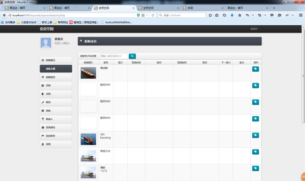
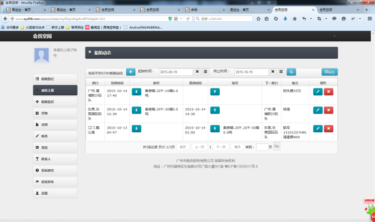

船舶动态功能简介
船舶动态功能，展现了我所有船舶实时的动态情况，到离港信息及待装货信息，清晰直观的显视了具体船舶的工作情况。船舶在运输过程中，船员通过点击动态上报按钮，上报船舶的到离港信息，方便管理船舶，实现运输智能化。
功能操作

船舶动态列表页面

（子账号、承运人）船舶动态：子账号登录自己的会员空间后，选择“船舶动态”模块，可以看到自己船代的船舶动态信息，界面如船舶动态列表页面所示。点击“船舶动态”按钮进入如上图页面。在此页面你可以通过“修改”、“删除”、“装货”、“卸货”按钮来编辑自己船代的“到离”信息。同理船代也可以如此操。